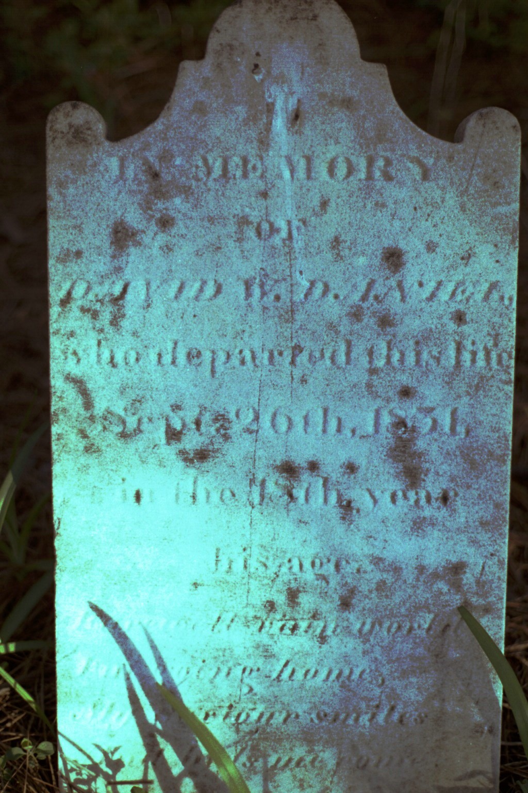

David W. Daniel
1813–1831
Life Events
Born: 1813
Died: September 26, 1831
Family
Father: Travers Daniel
Mother: Mary L. Wallace
Siblings
Military Service
No military service information has been added.
Biography
David W. Daniel was born around 1813 and was a son of Travers Daniel and Mary L. Wallace, according to family genealogical research.
David died at a young age. His gravestone at Daniel Family Cemetery in Wenona, Somerset County, Maryland, appears to record his death on September 26, 1831, in the nineteenth year of his age. The inscription is weathered, and the exact reading of the death date should be confirmed.
David was buried at Daniel Family Cemetery in Wenona, near Deal Island, Maryland. He died many years before his father Travers Daniel, whose will was written in 1858.
Photos
No additional photographs have been added.
Grave & Burial

Daniel Family Cemetery, Wenona, Somerset County, Maryland
Sources
No sources have been added yet.